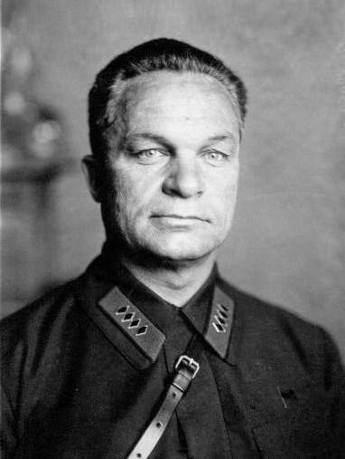

Егоров А.И.
Егоров Александр Ильич
Советский военачальник, один из первых Маршалов Советского Союза (1935).
25.10.1883—23.02.1939
Окончил Самарскую классическую гимназию в 1901 г. В том же году поступил на военную службу вольноопределяющимся, был зачислен в 4-й гренадерский Несвижский полк. Окончил по первому разряду (с отличием) Казанское пехотное юнкерское училище, где учился в 1902—1905 гг., 22 апреля 1905 г. был выпущен подпоручиком (со старшинством с 9 апреля 1904 г.) и распределился в 13-й лейб-гренадерский Эриванский полк. В ходе Первой русской революции в составе войск участвовал в карательных акциях на Кавказе. с 1904 г. примкнул к эсерам. Кадровый военный Русской императорской армии, участник Первой мировой войны, командовал ротой и батальоном 132-го пехотного Бендерского полка, был помощником начальника школы прапорщиков, дослужился до подполковника — командовал полком в этом звании, а потом в звании полковника. Был 5 раз ранен и контужен. После Февральской революции в чине подполковника вступил в партию эсеров. 1 мая 1917 г. был арестован за антивоенные выступления. В РККА с декабря 1917 г. отвечал за отбор офицеров для Красной армии, занимался вопросами пленных и беженцев, с августа 1918 г. командовал армиями и фронтами вГражданской войне (в частности, участвовал в боевых действиях под Самарой и Царицыном), а затем в советско-польской войне. С 26 декабря 1918 г по 25 мая 1919 г. — командующий 10-й армией. В 1919 г. был тяжело ранен в бою у Плетнёва (у реки Сал). В 1920—1921 гг. — командующий войсками Киевского, Петроградского ВО. В 1921—1922 гг. — командующий Западным фронтом. В 1922—1924 гг. — командующий Кавказской Краснознаменной армией. В 1924—1925 гг. — командующий вооружёнными силами Украинской ССР и Крыма, до 1926 г. был военным атташе в Китае, в 1927—1931 гг. командовал Белорусским военным округом. В 1931—1937 гг. — начальник Генштаба (Штаб до 1935 г.) РККА. В конце 1937 г. смещён на должность командующего Закавказским военным округом, сдал округ 21 февраля 1938 г. 8 февраля 1938 г. была арестована его жена Галина Цешковская. Сам Егоров был арестован 27 марта 1938 г., хотя ордер на его арест датирован месяцем позже. Обвинялся в «шпионаже, подготовке терактов и участии в к.-р. организации»; расследование его дела несколько замедлилось, но после смещения Ежова и принятия дел Берией некоторые дела были рассмотрены ускоренно, и Егоров был в числе нескольких других военных расстрелян в день Советской Армии — 23 февраля 1939 г.. Кремирован на Новом Донском кладбище. Посмертно реабилитирован 14 марта 1956 г.
| Евдокимов Г.Е.< Предыдущая | Следующая >Ежов Н.И. |
|---|